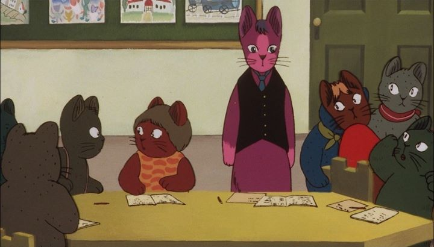

If you want to talk about classic animation from Japan, you will hopefully discuss things beyond "DragonBall Z" or "Naruto." I mean historically important films or shows, often accessible to both children and adults in the way Disney Animation has a special place in people's memories. The entire catelog of Studio Ghibli, for example. Or the broad works of anime and manga legend Osamu Tezuka. They reach a class of their own as timeless fantasies, even in a class above other popular films like "Akira" or "Ghost in the Shell." But these types of stories are few and far between.One will eventually come across the work of author Kenji Miyazawa, a Japanese man from the early 1900's who was also a teacher, Buddhist and musician. He wrote some poetry, short stories and short novels, some of which is considered to be classic literature to Japanese youth today. His lifestyle and beliefs seem to bring a unique style of meaning, being profound and capable of changing one's own ideals. His work hasn't been adapted often, but the 1985 film "Night on the Galactic Railroad," based on one of his most popular stories (made more so by the existance of this film), is often considered one of those mandatory classics of Japanese film. Not simply because of the story, but also because of director Gisaburo Sugii's personal style in its storytelling, and his unusual preference to portray the film's characters and anthropomorphic cats. Hey, if Walt Disney could do it, then why not?Taking place in a old Italian town, Giovanni is a school boy and somewhat of an outcast, with only classmate Campanella as his friend. During the night of a local festival, Giovanni sees a midnight train moving across the ground, where previously no tracks were. Observing Campanella getting on board, Giovanni follows, and the two ride the mysterious train to unknown destinations, meeting and discussing life with a variety of travellers. The story is an intentionally sad one, and it's hard to discuss it without mentioning spoilers. There are subtle hints to foreshadow the realization by the ending, that Campanella had drowned that night in the nearby river, and that he and other passengers on the train are riding off into some form of the afterlife. It takes its time to get to that ending however. The majority of the film is divided into vignettes of our lead characters sitting in a train cabin and meeting a new passenger, or traveling to a new setting. Passengers tell stories of who they were, or discuss their philosophies on the meaning of life. New places are eerie and empty, but beautiful in their silence, and sometimes beyond the natural laws we are familar with. The film takes an unusually solemn tone throughout, sometimes carefree as the two friends talk and chase each other, sometimes poetic and symbolic, many times over cutting with a title card to show time has passed, starting with the same image of the two cats patiently sitting in the train. I can't remember many other films, animated or otherwise, that have the same tone or style that "Night of the Galactic Railroad" has. But its deliberately slow pace can make the nearly two-hour film a chore to sit through, moreso for impatient children. And to say the story is especially "good" is something critics could write essays debating: it feels like it is trying to paint a picture of what life is, but in such a broad and unfocused way that I question its merit. I think of the story as a classic due to how innovative it might have been at the time, and its timeless appeal still holds, but I don't think it will necessarily appeal to everyone. Some will say it is a masterpiece, others will think it pretentious. The film shows its age in its animation and acting (the English dub is fine, but the story's quiet and slow pace doesn't make for exciting dramatic moments). Where the film does hold up better is in its visual aesthetic and in its soundtrack. While the choice to use cats was supposedly controversial at the time of its release, it helps make the film hold up much better and sell its non-Japanese setting. It doesn't look like anime, which might make it easier to convince certain viewers to give it a try. Some background designs are especially inspired in individual shots, at times leaving me in awe. The music is simple but melodic, with a few key lullabies putting the viewer in a trance, as if we were watching our own dream unfold before us. More interesting is how music is used sparingly, unafraid to leave lengthy moments with no sound at all. I hold high appreication for "Night on the Galactic Railroad," and consider it to be a classic and a masterpiece of its genre. But I can't deny it is also dense, and frankly, can be boring if you aren't in the right mindset from the start.
- "Ani" More reviews can be found at : https://2danicritic.github.io/ Previous review: review_Nichijou Next review: review_Night_Warriors_-_Darkstalkers'_Revenge